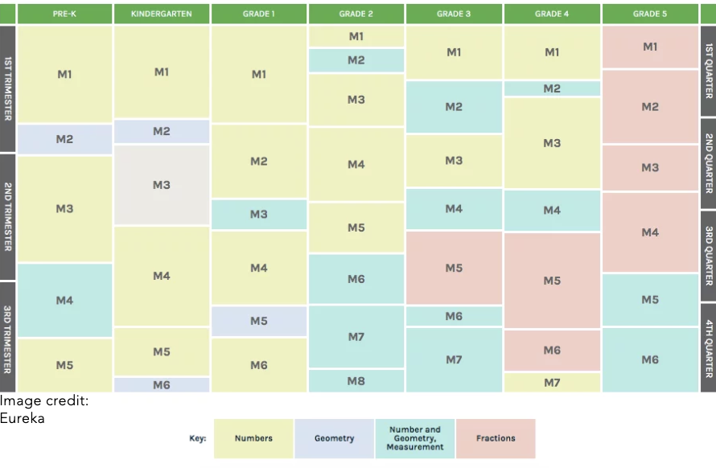
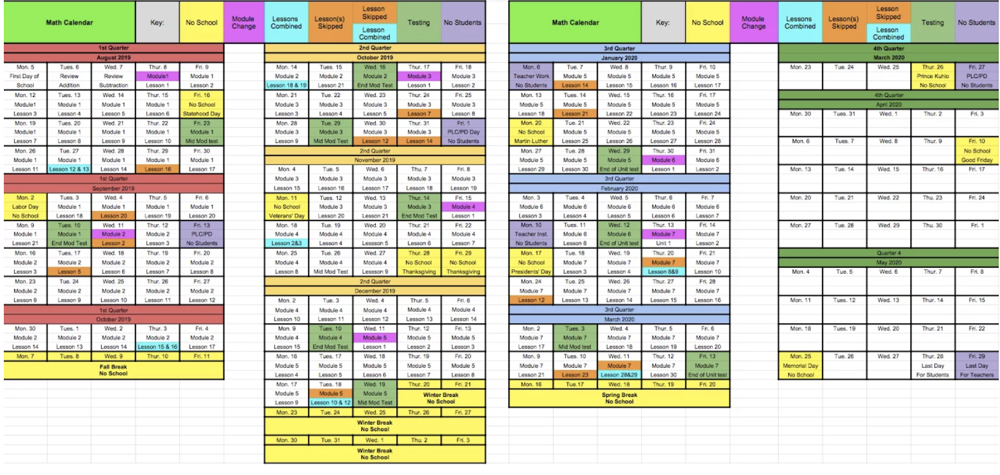
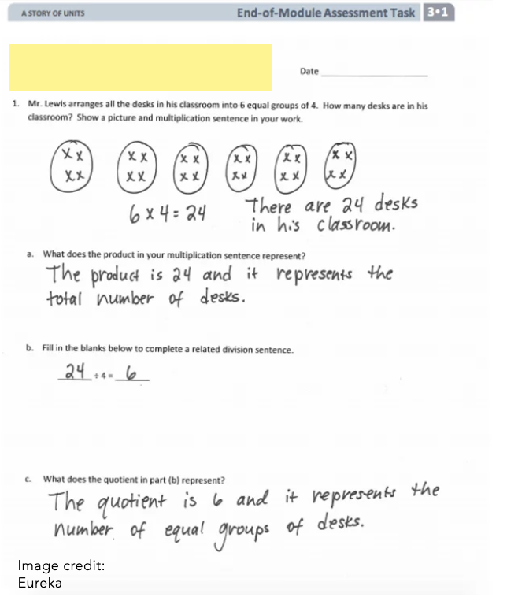
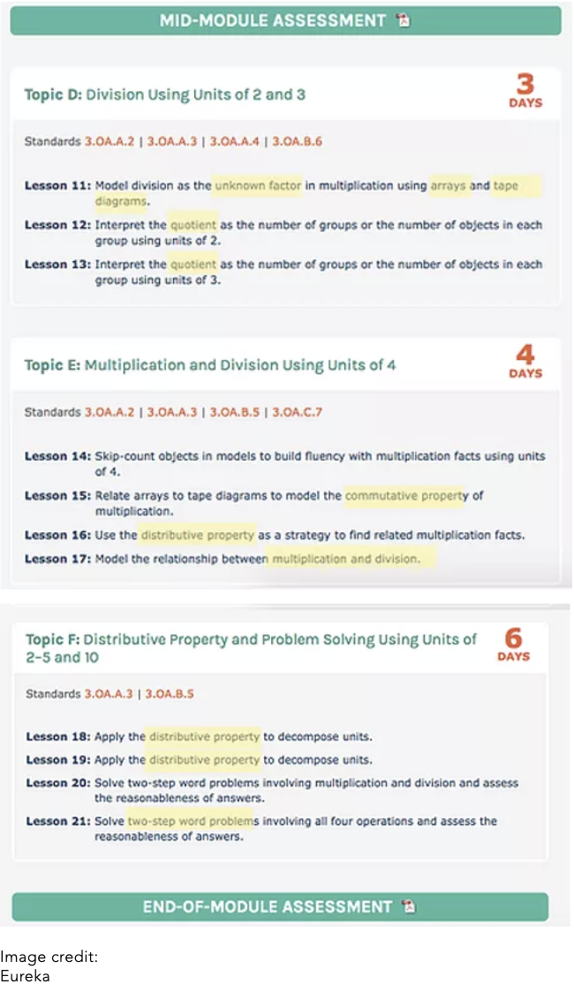
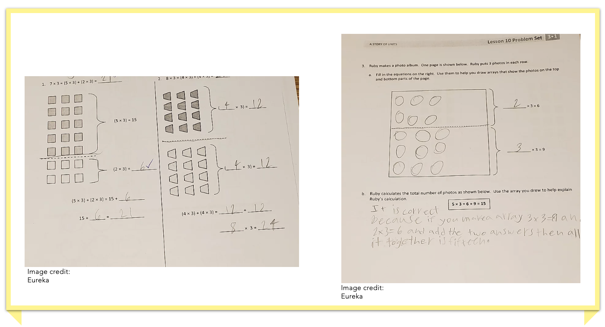
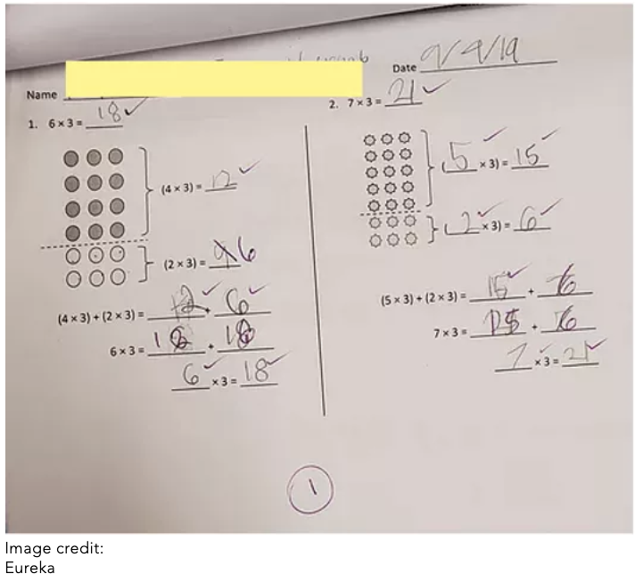
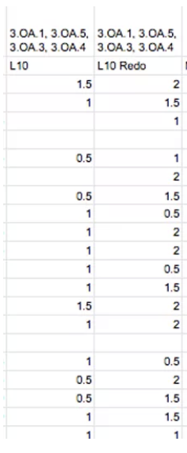
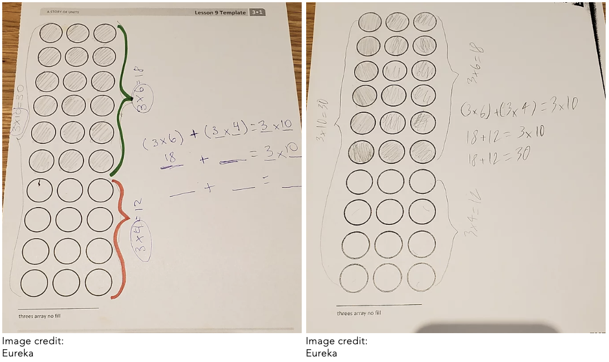
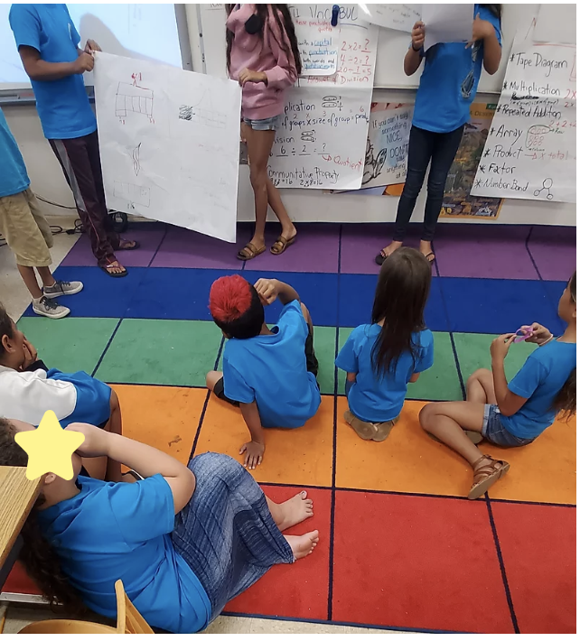
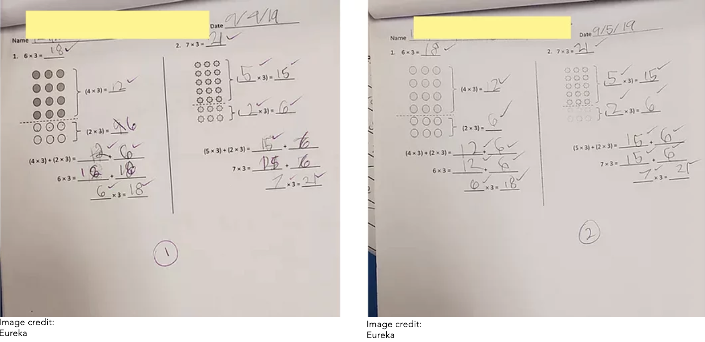

Teacher Growth- Planning for Instruction
Introduction
Planning to teach a third grade Math class to create rigorous learning goals requires beginning the Long Term planning during the summer. I use the Eureka Math curriculum given to our grade level to backward plan the year. The Eureka "A Story of Units" chapter begins in Kinder and ends in 5th grade. By taking a look at what each grade level is teaching I can understand where my students are coming from at the beginning of the year and create rigorous learning goals that they should have met by the end of the year.
Then I use the unit plan from Eureka to plan the unit starting with the assessment and ending with the first lesson of the unit. I go through the introduction of the unit (Eureka calls it a module) and see specific areas Eureka is targetings in the module. In this way I know that those are critical and they should not be skipped if there are any time constraints that month. Most Eureka modules tend to be 21 days (lessons). However, I always make sure to add an extra few days for review for tests and for reteaching lessons.
When I have a deeper understanding of the module I move on to looking at each individual lesson plan. Although Eureka has each lesson plan mapped down to the minute it should take to do each section of the lesson, I know the lesson plans are generic and they were created for students in middle SES community in the continental US. My students live in a low SES community on a small island in Hawaii. Since their needs differ I make adequate changes to meet the students where they are through the knowledge I have as learners and the knowledge I have acquired working in their community.
Throughout the process of planning for instruction I use long term planning, unit planning, lesson plans and reteaching of lesson plans to create a curriculum that links cross-disciplinary skills. I link cross-disciplinary skills in the lessons by including culturally relevant pedagogy through the word problems and chances for the students to create projects in teams and show it to the classroom.
The following links will let you see how I plan for a Math curriculum.
Long Term Planning
Before beginning to backward plan for a Math subject area it is important to look at what the students in the class have learned the previous years and also what they are meant to learn in the next few years. By looking at what other grades teach I have a better vision of where my students need to end up by the last day of school. This gives me a blueprint of how I need to backwards plan to get students where they need to be to be successful in fourth grade.

An overview of the modules taught in each grade and the length of time each module and area of study is given.
This computer program tests students throughout all of their math skills. When a student gets a question correct, the difficulty of the next question increases. There are three difficulty levels: easy, medium, and hard. If the student keeps missing questions, then the level of difficulty decreases on the test. This is all done through an algorithm.
The test takes the students approximately 20 minutes to complete. The students are given a score that I can see as either the percentile score compared to other students in third grade who take this test around the state or the grade level equivalent.
The table above shows me that before arriving in third grade my class has been working diligently on numbers. This makes sense because to be able to work on multiplication and division students need a solid understanding on addition, subtraction, place value, making ten and so on. Students have dramatically increased their understanding of geometry and measurement in second grade according to the chart. However, I have talked to the second grade team at my school and I know that they did not get to module 6, 7, or 8 last year. Therefore, the students are going to need more review on these modules when we get to module 2 in the math curriculum. I had originally planned to add a few extra days to the pacing guide on module 2 that the grade level has for math. However, I talked to the Eureka representative that came to our school at the beginning of the year and she stated that Eureka was made so that we would not need to add more review days. She said that instead of adding extra days to review and readjusting the pacing guide what we should do is to add more fluency exercising at the beginning of the lesson that have to do with the support the students need. fluency exercises are quick 3-4 minute exercises that practice or review skills from previous grades. The Eureka website has a list of exercises we can use to support measurement and geometry.
To support students in module two I plan on adding one extra fluency exercise at the start of each lesson.
Another section that I notice only begins in third grade is fractions. This new concept is introduced in third grade and lays the foundation for later grades, with a spike in teaching of fractions happening grade 5. This tells me that I cannot push the fraction module to the last portion of the year because I need to make sure to introduce fractions to the students to help them understand more complex concepts as the years go on.
Using the Eureka math pacing guide provided to our grade level, we created a pacing guide for how long it should take each module and for how many extra days we are adding to the module for review before the assessments and review of work.

An overview of the third grade curriculum, how long each module should take and the dates for when we should be moving on to the next module.
The first column of the table above shows each module taught in the year. Each module covers different sections within the math standards for third grade. The table shows after which days the mid-module and module assessments should be given. With this overview I can tell that we would finish Module 7 by March 15th and this would give me enough time to work on reviewing before the standardized high stakes assessment that the students take in April. Finishing Module 7 by March also means that the students know all of the standards necessary for the standardized assessment.

Artifact shows pacing guide for the entire year. The key at the top of the table shows how the year progresses.
I use this table in the summer as a way to see if I need to shift any days over to create more room to reteach lessons or add review lessons. I plan on adding more fluency exercises instead of adding extra days for module two because they did not get the foundational skills for geometry and measurement the year before.
References:
All of the artifacts on this page are taken from the Great Minds Eureka website: Great Minds Eureka. (2019). Eureka Math.
Unit Planning
The way I plan a unit is by starting with the assessment at the end of the unit to create rigorous goals and looking to see what standards are hit in the assessment and how I can incorporate those standards throughout my lessons.
As can be seen on the assessments section of this website, the module one assessment has five questions. Each question assesses different standards. When I plan for a unit I take a look at each question to see what are the essential components that I need to make sure to emphasize in my lessons. I also take a careful look at the type of vocabulary used in the questions. There are keywords that are used in the Eureka made assessments that can cause students to misinterpret or not be able to answer the question fully. I want to make sure to use those words in my instruction so that they become familiar with the students before the assessment.
The following assessment page was taken from the Eureka Math Teacher's Edition Textbook. The assessment was completed in such a way that it gives the sample student the top scores possible. By looking at her responses I can also see what I need to look at in my own students' responses when they complete exit tickets, practice worksheets or homework worksheets so that I can give them feedback on how to make their own responses more detailed.

Artifact shows an examplary response to the first question of the Module 1 Assessment.
When I take a look at the question above the first thing I notice is that students need to know what the phrase "multiplication sentence" means to be able to answer the first part of the question. They also need to know what a "product" is for part a, what a "division sentence" means for part b, and what a "quotient" means for part c.
The next section that I realize I need to add when making my unit plan is to add time to go over how to create a quick picture since that is a necessary component of the first question. I also need to ask students to explain how they got their mathematical responses in writing because this is asked of them on part a and c.
Therefore before even beginning the unit I make a plan to create a board for math vocabulary words that students will need to know and that I will keep as a living documentary that the students can refer back to when they do not know a specific term. I also make a plan to see which lessons introduce certain vocabulary terms so that I can make a conscious effort to use those words in my daily lessons.
After looking at the assessments for the unit I look through the pacing guide provided by the Eureka program. This pacing guide tells me how many days it is expected to go through each topic in the module. Module 1 has topics A through F. The whole unit should take no more than 25 days to complete including testing and review days. I looked at the standards for the unit to see what the students should know by the end of the unit. The following artifacts below show the breakdown of each topic in the module with the expected number of days per topic.


The artifacts above show the objectives for each topic in module 1. Several words are highlighted. This are vocabulary words that appear on the lesson.
The standards shown below are the main focus throughout the lessons of the module 1 unit plan. The mathematical practices are tasks that should be practiced throughout the different grade levels. Therefore these are practices that should be done routinely throughout the year. Hence I make sure to take a look at them when I begin a lesson so that I make sure to teach different ways to solve problems and think out loud why I do it so the students can model my thinking process.

The artifacts above show the standards for module 1.
References:
All of the artifacts on this page are taken from the Great Minds Eureka website: Great Minds Eureka. (2019). Eureka Math.
Lesson Plan
Planning a lesson requires looking at the standards that are hit in that lesson and backwards planning from there to be able to maximize the time in the classroom.
Planning for Lesson 10
The standards targeted in Lesson 10 for Module 1 are 3.OA.1, 3.OA.5, 3.OA.3, and 3.OA.4. Those standards look at the properties of operations and ask students to use the distributive property to find a multiplication problem.
After looking at the standards it is important to look at the lesson objective. The lesson objective in this lesson is to use arrays to model the distributive property as a strategy for multiplication. Once I know the standards for the lesson as well as the lesson objectives I take a look at the exit ticket given for the lesson.

The artifact is the exit ticket for Lesson 10 Module 1. There are two problems and each problem is scaffolded through the use of various steps to find the answer.
I always answer the questions for the exit ticket so that I can see any areas where students would have difficulty answering it themselves. With this exit ticket I notice that it is very thoroughly scaffolded. It has multiple steps to get to the answer. Therefore this makes me think that the studnets will not have a lot of issues with the exit ticket.
After looking at the exit ticket I move to look at the lesson planned through the Eureka curriculum.

Artifact above shows the pacing for the fluency exercises before new material is introduced.

Artifact above of student work on Multiples of 2 Pattern Sheet
Every math lesson follows the same routine. It always begins with a Fluency Practice. This fluency practice constitutes of a Multiply by 2 Pattern sheet and Group Counting.
For the pattern sheet, students get a worksheet and they wait until I set the timer before they turn it over and try to answer as many questions correctly as possible in 100 seconds. Before beginning the pattern sheet I go over multiplying by twos with the students so that they get a refresher and will be more confident on the pattern sheet.
After the timer goes off for the pattern sheet I go over the answers with the students. I tell the students I will go over the answers by column (top to bottom). To make the lesson more engaging I tell them to say "yes" if they got the answer correct. If they did not get it correct they do not say anything. When I stop hearing"yes" I stop going over the answers.
After the pattern sheet fluency activity we move onto group counting. The students stand up and turn to look at me. I tell them we are going to count by threes. Everytime they say a multiple of three they put a hand out. This keeps them engaged through the exercise and gives students a chance to move. I give a thumbs up when I want the students to count by threes. I give a thumbs down when I want the students to count down by threes. Finally I show my palm up when I want students to stop counting. Using these nonverbal strategies I can easily get the students attention throughout the lesson.
When group counting is over we move onto the application problem. I always have the Application problem written out on a piece of paper I project on the board. The application problem below talks about a guitar with 6 strings. To make the problem more cross-disciplinary I switch it to a ukulele. In this way the students think about their own culture living in Hawaii where ukuleles are an instrument played by the music teacher, used at local luaus and through their history.

Artifact shows the application problem projected on the board.
We work on the application problem as a whole class and use the strategy of reading the whole problem, drawing the problem and writing the answer by showing our work. The students work on the problem on a white board and marker. I ask them to show me their answers to monitor how their progress.

Artifacts show the pacing of the lesson and how Eureka wants us to teach the distributive property.
Than I move onto the concept development. In this case they had to draw an array and divide the array into two sections with a dotted line. I noticed in this section of the lesson that a lot of students were stuck working on the array. They were having trouble following along with my white board which I was projecting on the board.
When we were done solving the distributive property question I gave each student the problem set and gave them ten minutes to work. Students that understand the problems work are able to work on the homework problems if they finish the problem set before the ten minutes are up.

The two artifacts above are the problem set of a student who was able to finish all the problems in the 10 minutes given.
While students are individually working on the problem set I take a group of students to work with me. The students I pick are the students who got a 1 or below on the exit ticket for Lesson 9. I might also include students that I saw struggling with the problems on the white boards.
When the timer is up I gather the students back and we go over specific questions from the problem set. In this case we went over questions 1 and 2 on the problem set because they were the most similar to the questions that would be on the exit ticket.
After going through the problem set questions as a class and reflection on the answers I give out the exit ticket. The students have approximately five minutes to work on the exit ticket silently.

Artifact of Student Exit ticket for Lesson 10
As can be seen by comparing the problem set questions 1 and 2 to the exit ticket questions I can see that they are very similar questions. During the problem set time I highly encourage students to finish the first and second questions of the problem set in the time given so that they can go over their answers with me in the class discussion after the problem set time is up. This helps students to be prepared for the exit ticket at the end of the lesson.
and the homework worksheets, the problems are very similar. Therefore students are highly encouraged to finish the homework problems because it becomes extra practice, more so if they were not able to complete the whole problem set in the ten minutes given.

The two artifacts above are the homework worksheet done by the same student as the problem set worksheet.
It is important to note how similar the problem set and homework worksheets are to each other. Therefore students are highly encouraged to finish the homework problems because it becomes extra practice, more so if they were not able to complete the whole problem set in the ten minutes given.
References:
All of the artifacts on this page are taken from the Great Minds Eureka website: Great Minds Eureka. (2019). Eureka Math.
Reteaching Lesson Plan
After looking at the scores of the students' exit tickets on the Lesson 10 I noticed that no student was able to get a 2 (the highest score) on the exit ticket. Most of the students scored a 1 or below. This told me that the lesson needed to be retaught because the students had not understood the standards the first time. I realized when I looked at the exit ticket that it could be confusing to students the different scaffolding steps. Therefore I decided to practice this as a whole group and later on in a small group with the students who scored a 0.5 on the previous exit ticket.

Artifact shows how the scaffolding could be confusing to students in the exit ticket if a student does not know that the lines indicate where the answers should go from the multiplication in parentheses.

The artifact on the left shows the scores for the students on the exit ticket for Lesson 10 and on the retaught exit ticket (L10 Redo). The top row shows the standards hit on each exit ticket. The cells with no numbers mean that the student was absent that day.
To practice as a whole group what I did was make copies of the array found on Lesson 9 and use it to create more problems where the students had to divide an array into two sections and create two multiplication problems for each section. Afterwards they had to add both sections using the distributive property to solve how many circles there are in total in the array. I made a lot of copies of the array worksheet. For the first round, I would give out a problem and I would work it out and the students would follow along. For the second round, (with a new blank array worksheet) I would give out the problem and we would work it out as a class. For the third round, I gave out the problem and the students worked out the solution by themselves or in partners.

The artifacts above show the Lesson 9 array worksheet. The worksheet with the green and orange brakets was done by me on the projector. The other one was done by a student.
Than I placed students into groups of three or four and gave each group a blank chart paper. I gave each group an array and asked them to divide it anyway they wanted and to solve it. Every group was told they would present to the class. I worked with the group that had had the most difficulty during the exit ticket the day before.

The artifact above shows a group showcasing their array problem to the rest of the class.
I noticed that students performed better the second time the lesson was taught than the first time. The students took the exact same exit ticket both times. I did not go over the exit ticket with the class after the lesson was taught the first time. The difference in scores is due to the amount time the students got to practice the distributive property the second day. The second day they also did more group based learning and got to do a small project at the end of the lesson teaching their peers. This allowed students who are less engaged during math to feel the pressure of their peers to performed better so that they could present to the class.

Artifact on the left shows student exit ticket from the first time teaching Lesson 10. Student earned a 1 out of 2 points on the exit ticket. Artifact on the right shows the same student's exit ticket after the second time teaching Lesson 10. Student improved score by a whole point on the second exit ticket.
The same day that the lesson redo was taking place we were reading the book "My Rows and Piles of Coins" during reading class. This book is about a boy who does different chores at home to get coins so that he can save up enough money to buy a bike and help his parents go to the farmers market with the products they want to sell.
The students made a connection with this book and lesson 10. They realized that the boy would count his coins by putting it into rows and columns. The illustration from the book below shows how he would stack up his coins. The activity we did was not a planned activity. It happened organically because the students made the connection in reading class. I got the students to sit on the carpet in different rows and columns and figure out how many students there were on the carpet by giving a multiplication sentence instead of just counting each student. The students went into the lesson 10 reteach with this cross-disciplinary activity in mind. I believe that doing this activity during reading block allowed them to see the value of understanding math and how different content areas are related to each other.

Artifact on above shows students performing rows and columns to showcase how many rows of coins the main character of the story must have collected.

Artifact above shows a small scene from the passage "My Rows and Piles of Coins" with the illustration that came in the story of coins in different rows and columns.
References:
All of the artifacts on this page are taken from the Great Minds Eureka website: Great Minds Eureka. (2019). Eureka Math.
The passage and illustration from "My Rows and Piles of Coins" comes from the Pearson Realize website: Pearson Realize Online Teacher's Edition (2019). Pearson Education
Conclusion
It is specifically through backwards planning that I am able to create a lesson plan that is tailored to each learner. I begin with the long term planning and look at what the standards taught in each module to create rigorous goals. Afterwards, I dive more deeply into each module so that I can see where the students should be headed by the end of the module. This also helps me to see how I can create a lesson plan that is more rigorous by drawing from other content areas the students are learning about during the time that lesson is taught. In this way I can link cross-disciplinary skills to make connections to the skills taught in the lessons.
Reference:
CCSSO’s Interstate Teacher Assessment and Support Consortium (InTASC). (2011, April). PDF. Washington.